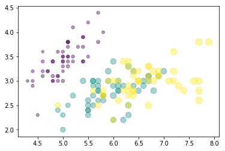

O que você vai encontrar aqui?
Olá, muito prazer! Me chamo Jonathan. Se você, assim como eu, é apaixonado por dados, está na documentação certa. Esta é a minha documentação de Data-Science. Enjoy it!
Mas afinal, o que você irá encontrar aqui?
Dados
In [1]: iris.head()
Out[8]: Sepal.Length Sepal.Width Petal.Length Petal.Width Species SpeciesNumber
1 5.1 3.5 1.4 0.2 setosa 0
2 4.9 3.0 1.4 0.2 setosa 0
3 4.7 3.2 1.3 0.2 setosa 0
4 4.6 3.1 1.5 0.2 setosa 0
5 5.0 3.6 1.4 0.2 setosa 0
Gráficos
In [1]: plt.scatter(
iris['Sepal.Length'], iris['Sepal.Width'], sizes=20 * iris['Petal.Length'],
c=iris['SpeciesNumber'], cmap='viridis', alpha=0.4
)
Out[8]: <matplotlib.collections.PathCollection at 0x7f056ae2d3c8>

Python
Como toda boa análise de dados, é necessário uma boa ferramenta de manipulação destes dados. Nesta documentação, para tanto, utilizarei o python e suas distribuições anaconda, ou seja, utilizaremos o Numpy, Pandas, Seaborn, Geopandas, etc.
Patra ver mais sobre a distribuição anaconda clique aqui .
Tutorial
Nesta documantação falaremos o tempo todo em ferramentas de manipulação de dados, logo recomendo, fortemente, que você tenha instalado a distribuição anaconda, pois ela já vem munida da linguagem de programação python e sua principais bibliotecas. Caso contrário poderá instalar o python e as bibliotecas separadamente.